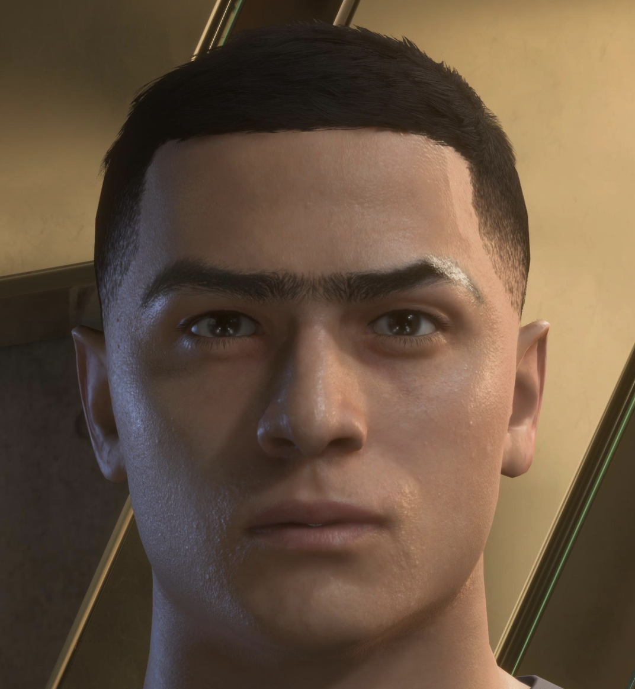

Une photo · un mix de presets · les sliders exacts, prêts à coller dans ton jeu.

30 secondes · les sliders exacts FC26 générés automatiquement
Visage de face, lumière naturelle, fond neutre
L'IA suggère une carnation FC26 — confirme ou ajuste selon ta peau